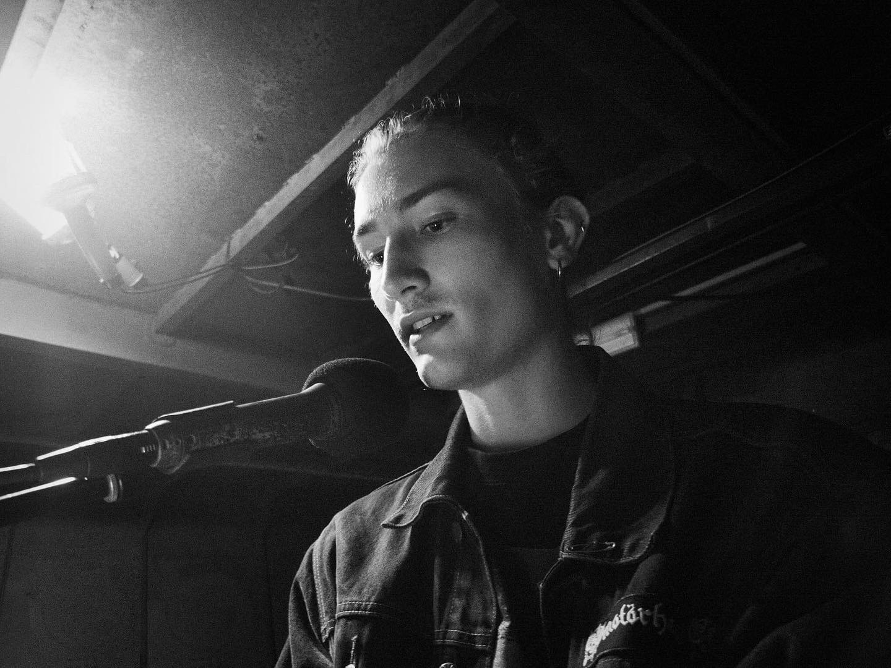
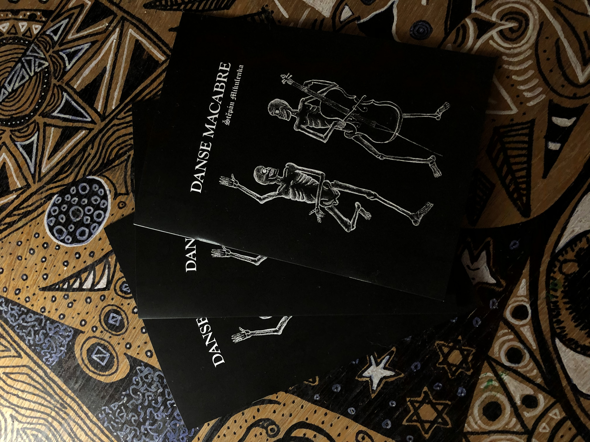

Byt 451
Černá i bílá
zloděj i víla
krůpěje krve
zářivě rudé
propadlé tváře
prachy pod polštářem
roztrhlé kalhoty
svatební šaty
v pokoji vůně panská
v posteli milenka krásná
úsměv na tváři ze zvyku
nevinná vražda na krku...
Sousedka z bytu 451
bláznivá vědma
na prsou leží mi
nejhezčí na zemi...

Poupata (leden 2020)
Poupata mají barvu krve...
šeď zakryla oblohu...
uběhlo tolik času...
Změnilo se vůbec něco?
z vězení do vězení své hlavy
se toulám a chvíli si myslím,
že jsem se osvobodil...
sloni s vetchými nohami
se loudají Dalího obrazy
a moje láska k nim roste...
vědění znamená smutek...
růže hoří a je krásná,
zastavil se čas,
nebo to je jenom pocit?
Je půl páté ráno
múza je furt stejně mrtvá,
mrtvolnost mršiny je všudypřítomná,
drápe se po podlaze a po zdech,
a umělci jsou přeplnění jak vázy,
rozpolcení názory společnosti,
pukají jim jejich keramické hlavy…
Nesmyslnost existence se násobí
s přibývajícím světlem.
Pracovité ruce popraskaly a už jen tak visí
podél těla…
K obloze vzhlížíme v obavách i s nadějí…
A plíce nám naplňují výpary
rozkládající se společnosti..
